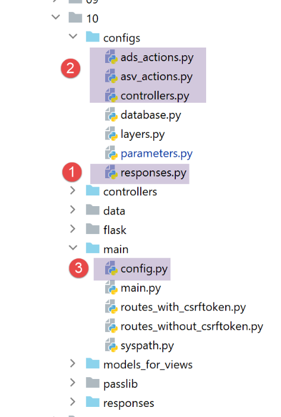
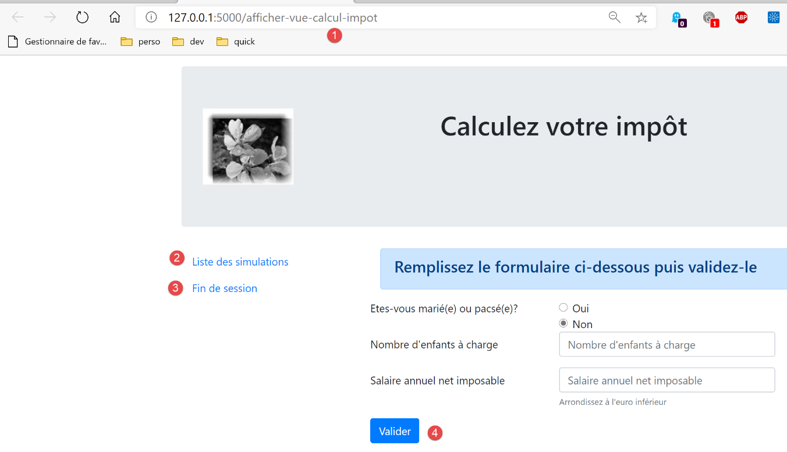

35. 应用练习：第15版
35.1. 简介
此版本旨在解决应用程序页面在浏览器中刷新时出现的问题（F5）。举个例子。用户刚刚删除了 id=3 的模拟：

删除后，浏览器中的URL变为[/supprimer-simulation/3/…]。 如果用户刷新页面（F5），则会重新加载 URL 和 [1]。因此，系统会再次请求删除 id=3 的模拟。结果如下：

以下是另一个示例。用户刚刚计算了一笔税款：
- 在 [1] 中，URL 和 [/calculer-impot] 刚被 POST 查询过；
如果用户刷新页面（F5），会收到一条警告信息：

页面刷新操作会重新执行浏览器上次执行的请求，此处为 [POST /calculer-impot]。 当要求重放 POST 时，浏览器会发出与上述类似的警告。该警告提示正在重放已执行的操作。假设该 POST 已完成一次购买，那么重复该操作将是不必要的。
此外，我们将限制用户在浏览器中输入 URL 的可能性。以之前的视图之一为例：

该页面提供的链接包括：
- [Liste des simulations] 关联 URL [/lister-simulations]；
- [Fin de session] 关联 URL [/fin-session]；
- [Valider] 关联 URL（上文未显示）[/calculer-impot]；
当显示税款计算视图时，我们仅接受操作代码 [/lister-simulations, /fin-session, /calculer-impot]。如果用户在浏览器中输入其他操作代码，系统将报错。我们将对应用程序的四个视图均进行此类验证。
我们计划通过以下方式解决页面刷新问题：
- 我们将操作分为两类：
- ADS 操作（执行操作）会改变应用程序的状态。这类操作通常在 URL 或请求主体中包含参数；
- ASV 操作（显示视图操作）用于显示视图，而不改变应用程序的状态。ASV 操作的数量与视图 V 的数量相同。ASV 操作不带任何参数；
- 此前，ADS 操作在准备好视图 V 的模型 M 后执行，并以显示该视图 V 结束。 现在，它们将视图的模板 M 放入会话中，并要求浏览器重定向至负责显示视图 V 的操作 ASV；
- 视图 V 仅会在操作 ASV 完成后才显示。它们将从会话中获取其模板；
此方法的优势在于，浏览器地址栏将显示 URL ASV。 刷新页面时将重新执行 ASV 操作。该操作不会改变应用程序的状态，且使用会话模板。因此，同一页面将重新显示，且不会产生任何副作用。 最终，由于重定向机制，用户在浏览器中只会看到 URL 操作（源自 ASV），从而产生在不同页面间浏览的错觉；
35.2. 实现

文件 [impots/http-servers/10] 最初是通过复制文件 [impots/http-servers/09] 获得的。随后该文件被修改。
35.2.1. 新路径

在两个文件 [routes_with_csrftoken] 和 [routes_without_csrftoken] 中，我们需要创建四个路由，对应 ASV 中的四个操作，这些操作用于显示四个视图。其余路由保持不变。
在 [routes_with_csrftoken] 中：
# 显示税费计算视图
@app.route('/afficher-vue-calcul-impot/<string:csrf_token>', methods=['GET'])
def afficher_vue_calcul_impot(csrf_token: str) -> tuple:
# 正在执行与该操作关联的控制器
return front_controller()
# 显示身份验证视图
@app.route('/afficher-vue-authentification/<string:csrf_token>', methods=['GET'])
def afficher_vue_authentification(csrf_token: str) -> tuple:
# 执行与该操作关联的控制器
return front_controller()
# 显示-模拟列表视图
@app.route('/afficher-vue-liste-simulations/<string:csrf_token>', methods=['GET'])
def afficher_vue_liste_simulations(csrf_token: str) -> tuple:
# 执行与该操作关联的控制器
return front_controller()
# 显示-错误列表视图
@app.route('/afficher-vue-liste-erreurs/<string:csrf_token>', methods=['GET'])
def afficher_vue_liste_erreurs(csrf_token: str) -> tuple:
# 执行与该操作关联的控制器
return front_controller()
第 1-23 行，我们为四个 ASV 操作创建了四个路由：
- [/afficher-vue-authentification]，第 8 行，显示身份验证视图；
- [/afficher-vue-calcul-impot]，第 2 行，显示税额计算视图；
- [/afficher-vue-liste-simulations]，第14行，显示模拟视图；
- [/afficher-vue-liste-erreurs]，第 20 行，显示意外错误视图；
在无代币路线的文件 [routes_with_csrftoken] 中也进行同样的操作：
# 路由 ASV -------------------------
# 显示-税费计算视图
@app.route('/afficher-vue-calcul-impot', methods=['GET'])
def afficher_vue_calcul_impot() -> tuple:
# 执行与该操作关联的控制器
return front_controller()
# 显示身份验证视图
@app.route('/afficher-vue-authentification', methods=['GET'])
def afficher_vue_authentification() -> tuple:
# 执行与该操作关联的控制器
return front_controller()
# 显示-模拟列表视图
@app.route('/afficher-vue-liste-simulations', methods=['GET'])
def afficher_vue_liste_simulations() -> tuple:
# 执行与该操作关联的控制器
return front_controller()
# 显示-错误列表视图
@app.route('/afficher-vue-liste-erreurs', methods=['GET'])
def afficher_vue_liste_erreurs() -> tuple:
# 执行与该操作关联的控制器
return front_controller()
35.2.2. 新的控制器

控制器 [AfficherVueAuthentificationController] 执行操作 ASV [/afficher-vue-authentification]：
from flask_api import status
from werkzeug.local import LocalProxy
from InterfaceController import InterfaceController
class AfficherVueAuthentificationController(InterfaceController):
def execute(self, request: LocalProxy, session: LocalProxy, config: dict) -> (dict, int):
# 获取路径中的元素
params = request.path.split('/')
action = params[1]
# 视图切换——只需设置状态码
return {"action": action, "état": 1100, "réponse": ""}, status.HTTP_200_OK
此前提到，ASV 操作没有参数，也不会改变应用程序的状态。我们只需通过在第 14 行设置状态代码来显示所需的视图。
控制器 [AfficherVueCalculImpotController] 执行操作 ASV[/afficher-vue-calcul-impot]：
from flask_api import status
from werkzeug.local import LocalProxy
from InterfaceController import InterfaceController
class AfficherVueCalculImpotController(InterfaceController):
def execute(self, request: LocalProxy, session: LocalProxy, config: dict) -> (dict, int):
# 获取路径中的元素
params = request.path.split('/')
action = params[1]
# 视图切换——只需设置状态代码
return {"action": action, "état": 1400, "réponse": ""}, status.HTTP_200_OK
控制器 [AfficherVueListeSimulationsController] 执行操作 ASV [/afficher-vue-liste-simulations]：
from flask_api import status
from werkzeug.local import LocalProxy
from InterfaceController import InterfaceController
class AfficherVueListeSimulationsController(InterfaceController):
def execute(self, request: LocalProxy, session: LocalProxy, config: dict) -> (dict, int):
# 获取路径中的元素
params = request.path.split('/')
action = params[1]
# 视图切换——只需设置状态代码
return {"action": action, "état": 1200, "réponse": ""}, status.HTTP_200_OK
控制器 [AfficherVueListeErreursController] 执行操作 ASV [/afficher-vue-liste-erreurs]：
from flask_api import status
from werkzeug.local import LocalProxy
from InterfaceController import InterfaceController
class AfficherVueListeErreursController(InterfaceController):
def execute(self, request: LocalProxy, session: LocalProxy, config: dict) -> (dict, int):
# 获取路径中的元素
params = request.path.split('/')
action = params[1]
# 视图切换——只需设置状态代码
return {"action": action, "état": 1300, "réponse": ""}, status.HTTP_200_OK
总结状态代码：
- 代码 1100 应显示身份验证视图；
- 代码 1400 应显示税额计算视图；
- 代码 1200 应显示模拟视图；
- 代码 1300 应显示意外错误视图；
35.2.3. 新配置 MVC

由于配置文件MVC体积过大，已拆分为四个文件：
- [controllers]：MVC 应用程序的 C 控制器列表；
- [ads_actions]：列出 ADS 的操作（Action Do Something）；
- [asv_actions]：列出 ASV 的操作（Action Show View）；
- [responses]：列出应用程序中 HTTP 响应的类；
我们先从最简单的开始，即响应文件 HTTP [responses]：
def configure(config: dict) -> dict:
# 应用程序配置 MVC
# 响应 HTTP
from HtmlResponse import HtmlResponse
from JsonResponse import JsonResponse
from XmlResponse import XmlResponse
# 各种响应类型（json、xml、html）
responses = {
"json": JsonResponse(),
"html": HtmlResponse(),
"xml": XmlResponse()
}
# 生成答案词典 HTTP
return {
# 答案 HTTP
"responses": responses,
}
不出所料。
控制器文件 [controllers] 同样不出所料。其中仅仅添加了 ASV 动作的新控制器。
def configure(config: dict) -> dict:
# 应用程序配置 MVC
# 主控制器
from MainController import MainController
# 操作控制器 ADS
from AuthentifierUtilisateurController import AuthentifierUtilisateurController
from CalculerImpotController import CalculerImpotController
from CalculerImpotsController import CalculerImpotsController
from FinSessionController import FinSessionController
from GetAdminDataController import GetAdminDataController
from InitSessionController import InitSessionController
from ListerSimulationsController import ListerSimulationsController
from SupprimerSimulationController import SupprimerSimulationController
from AfficherCalculImpotController import AfficherCalculImpotController
# 操作控制器 ASV
from AfficherVueCalculImpotController import AfficherVueCalculImpotController
from AfficherVueAuthentificationController import AfficherVueAuthentificationController
from AfficherVueListeErreursController import AfficherVueListeErreursController
from AfficherVueListeSimulationsController import AfficherVueListeSimulationsController
# 授权操作及其控制器
controllers = {
# 计算会话的初始化
"init-session": InitSessionController(),
# 用户身份验证
"authentifier-utilisateur": AuthentifierUtilisateurController(),
# 税款计算视图链接
"afficher-calcul-impot": AfficherCalculImpotController(),
# 个人模式下的税款计算
"calculer-impot": CalculerImpotController(),
# 批量模式下的税款计算
"calculer-impots": CalculerImpotsController(),
# 模拟列表
"lister-simulations": ListerSimulationsController(),
# 删除模拟
"supprimer-simulation": SupprimerSimulationController(),
# 结束计算会话
"fin-session": FinSessionController(),
# 获取税务机关数据
"get-admindata": GetAdminDataController(),
# 主控制器
"main-controller": MainController(),
# 显示身份验证视图
"afficher-vue-authentification": AfficherVueAuthentificationController(),
# 显示税款计算视图
"afficher-vue-calcul-impot": AfficherVueCalculImpotController(),
# 模拟视图显示
"afficher-vue-liste-simulations": AfficherVueListeSimulationsController(),
# 显示错误视图
"afficher-vue-liste-erreurs": AfficherVueListeErreursController()
}
# 显示验证器配置
return {
# 控制器
"controllers": controllers,
}
ASV 操作的 [asv_actions] 配置如下：
def configure(config: dict) -> dict:
# 应用程序配置MVC
# 视图 HTML 及其模板取决于控制器返回的状态
# 操作 ASV（显示视图操作）
asv = [
{
# 身份验证视图
"états": [
1100, # /显示-身份验证视图
],
"view_name": "views/vue-authentification.html",
},
{
# 税款计算视图
"états": [
1400, # /显示-税款计算视图
],
"view_name": "views/vue-calcul-impot.html",
},
{
# 模拟列表视图
"états": [
1200, # /显示-模拟列表视图
],
"view_name": "views/vue-liste-simulations.html",
},
{
# 错误列表视图
"états": [
1300, # /显示-错误列表视图
],
"view_name": "views/vue-erreurs.html",
},
]
# 生成配置 ASV
return {
# 视图和模板
"asv": asv,
}
- 文件 [asv_actions] 汇集了这四个新操作，其工作原理如下：
- 它们没有任何参数；
- 它们显示一个精确视图，其模板位于会话中；
- 第6至35行的列表[asv]，将每个视图与相应操作ASV关联；
文件 [ads_actions] 汇集了以下操作 ADS：
def configure(config: dict) -> dict:
# 应用程序配置 MVC
# 视图模板
from ModelForAuthentificationView import ModelForAuthentificationView
from ModelForCalculImpotView import ModelForCalculImpotView
from ModelForErreursView import ModelForErreursView
from ModelForListeSimulationsView import ModelForListeSimulationsView
# 操作 ADS (执行某项操作)
ads = [
{
"états": [
400, # /fin-session 成功
],
# 重定向至操作 ADS
"to": "/init-session/html",
},
{
"états": [
700, # /初始化会话 - 成功
201, # /用户认证失败
],
# 重定向到操作 ASV
"to": "/afficher-vue-authentification",
# 下一个视图的模板
"model_for_view": ModelForAuthentificationView()
},
{
"états": [
200, # /用户认证成功
300, # /计算-税款 成功
301, # /计算-税款 失败
800, # /显示-税款计算 链接
],
# 重定向至操作 ASV
"to": "/afficher-vue-calcul-impot",
# 下一视图的模板
"model_for_view": ModelForCalculImpotView()
},
{
"états": [
500, # /列出模拟 成功
600, # /删除模拟 成功
],
# 重定向至操作 ASV
"to": "/afficher-vue-liste-simulations",
# 下一视图模板
"model_for_view": ModelForListeSimulationsView()
},
]
# 意外错误视图
view_erreurs = {
# 重定向到操作 ASV
"to": "/afficher-vue-liste-erreurs",
# 下一个视图的模板
"model_for_view": ModelForErreursView()
}
# 呈现配置 MVC
return {
# 操作 ADS
"ads": ads,
# 意外错误视图
"view_erreurs": view_erreurs,
}
- 第11-51行：ADS操作列表（Action Do Something）。其中包含所有先前版本的操作。但其工作原理已发生变化：
- 它们不再直接显示视图 V，而是仅准备该视图 V 的模型 M；
- 它们通过重定向至与视图 V 关联的操作 ASV 来请求显示视图 V；
- 并非所有 ADS 操作都会重定向到 ASV 操作： 第 12-18 行，操作 ADS [/fin-session] 会导致重定向至操作 ADS [/init-session/html]。 为了区分重定向 ADS -> ADS 和 ADS -> ASV，可以参考模板 [model_for_view]。 但对于重定向 ADS -> ADS，该模板并不存在；
汇总所有配置的文件 [main/config] 演变如下：
def configure(config: dict) -> dict:
# syspath 配置
import syspath
config['syspath'] = syspath.configure(config)
# 应用程序配置
import parameters
config['parameters'] = parameters.configure(config)
# 数据库配置
import database
config["database"] = database.configure(config)
# 应用程序层的实例化
import layers
config['layers'] = layers.configure(config)
# MVC 层的配置
config['mvc'] = {}
# [web] 层的控制器配置
import controllers
config['mvc'].update(controllers.configure(config))
# ASV 操作（显示视图操作）
import asv_actions
config['mvc'].update(asv_actions.configure(config))
# 操作 ADS（执行操作）
import ads_actions
config['mvc'].update(ads_actions.configure(config))
# 响应配置 HTTP
import responses
config['mvc'].update(responses.configure(config))
# 生成配置
return config
35.2.4. 新模板

这些模板将生成新的信息。以身份验证视图模板为例：
from flask import Request
from werkzeug.local import LocalProxy
from AbstractBaseModelForView import AbstractBaseModelForView
class ModelForAuthentificationView(AbstractBaseModelForView):
def get_model_for_view(self, request: Request, session: LocalProxy, config: dict, résultat: dict) -> dict:
# 将页面数据封装到模板中
modèle = {}
…
# CSRF令牌
modèle['csrf_token'] = super().get_csrftoken(config)
# 视图中可执行的操作
modèle['actions_possibles'] = ["afficher-vue-authentification", "authentifier-utilisateur"]
# 渲染模板
return modèle
- 新功能位于第17行：每个模型都会在作为其模型M的视图V显示时，生成一份可执行操作的列表。要了解这些操作，需返回视图V。以身份验证视图为例：

- 可见，认证视图仅提供一个操作，即按钮 [Valider] 的操作。该操作为 [/authentifier-utilisateur]；
我们编写了：
# 视图可执行的操作
modèle['actions_possibles'] = ["afficher-vue-authentification", "authentifier-utilisateur"]
在上图中，可以看到如果用户刷新视图，操作 [1] [/afficher-vue-authentification] 将被重新执行。 因此必须对其进行授权。若未授权，用户每次刷新页面时都会遇到错误。我们认为这种情况并不理想。
可能的操作已放入视图模板中。我们知道该模板将被存入会话。
我们对四个视图均进行了此操作。因此，可执行的操作如下：
身份验证视图
modèle['actions_possibles'] = ["afficher-vue-authentification", "authentifier-utilisateur"]
税款计算视图
# 视图中可执行的操作
modèle['actions_possibles'] = ["afficher-vue-calcul-impot", "calculer-impot", "lister-simulations","fin-session"]
模拟列表视图
# 视图中的可用操作
actions_possibles = ["afficher-vue-liste-simulations", "afficher-calcul-impot", "fin-session"]
if len(modèle['simulations']) != 0:
actions_possibles.append("supprimer-simulation")
modèle['actions_possibles'] = actions_possibles
错误列表视图
# 视图中的可用操作
modèle['actions_possibles'] = ["afficher-vue-liste-erreurs", "afficher-calcul-impot", "lister-simulations", "fin-session"]
35.2.5. 新的主控制器

控制器 [MainController] 进行了若干修改：
# 导入依赖项
import threading
import time
from random import randint
from flask_api import status
from flask_wtf.csrf import generate_csrf, validate_csrf
from werkzeug.local import LocalProxy
from wtforms import ValidationError
from InterfaceController import InterfaceController
from Logger import Logger
from SendAdminMail import SendAdminMail
def send_adminmail(config: dict, message: str):
# 向应用程序管理员发送邮件
config_mail = config['parameters']['adminMail']
config_mail["logger"] = config['logger']
SendAdminMail.send(config_mail, message)
# 应用程序主控制器
class MainController(InterfaceController):
def execute(self, request: LocalProxy, session: LocalProxy, config: dict) -> (dict, int):
# 处理请求
type_response1 = None
logger = None
try:
# 获取路径中的元素
params = request.path.split('/')
# 该操作是第一个元素
action = params[1]
# 记录日志
logger = Logger(config['parameters']['logsFilename'])
…
# 操作 /afficher-vue-liste-erreurs 具有特殊性
# 不进行任何验证，否则可能会陷入无限重定向循环
erreur = False
if action != "afficher-vue-liste-erreurs":
# 若发生错误，[结果]即为发送给客户端的结果
(erreur, résultat, type_response1) = MainController.check_action(params, session, config)
# 若无错误，则执行该操作
if not erreur:
# 执行与该操作关联的控制器
controller = config['mvc']['controllers'][action]
résultat, status_code = controller.execute(request, session, config)
except BaseException as exception:
# （意外）异常
résultat = {"action": action, "état": 131, "réponse": [f"{exception}"]}
erreur = True
finally:
pass
# 运行错误
if erreur:
# 请求错误
status_code = status.HTTP_400_BAD_REQUEST
if config['parameters']['with_csrftoken']:
# 将 csrf_token 添加到结果中
résultat['csrf_token'] = generate_csrf()
….
# 发送响应 HTTP
return response, status_code
@staticmethod
def check_action(params: list, session: LocalProxy, config: dict) -> (bool, dict, str):
…
# 方法的结果
return erreur, résultat, type_response1
- 第39-44行：对该操作进行了初步验证。我们稍后将详细讨论。静态方法[MainController.check_action]返回一个包含三个元素的元组：
- [erreur]：若检测到错误则返回 True，否则返回 False；
- [résultat]：若 (error==True) 则返回错误结果，否则返回 None；
- [type_response1]：会话的类型（json、xml、html、None），即在会话中找到的类型；
- 第 39 行：未进行任何验证，如果该操作是 ASV [afficher-vue-liste-erreurs] 操作，则会显示错误列表。 实际上，如果在此操作中发现错误，系统将再次重定向至操作 [/afficher-vue-liste-erreurs]，从而陷入无限重定向循环；
- 静态方法 [check_action] 的实现如下：
@staticmethod
def check_action(params: list, session: LocalProxy, config: dict) -> (bool, dict, str):
# 获取当前操作
action = params[1]
# 初始时无错误且无结果
erreur = False
résultat = None
# 在执行某些操作前必须已知会话类型ADS
type_response1 = session.get('typeResponse')
if type_response1 is None and action != "init-session":
# 记录错误
résultat = {"action": action, "état": 101,
"réponse": ["pas de session en cours. Commencer par action [init-session]"]}
erreur = True
# 执行某些操作时 ADS 必须经过身份验证
user = session.get('user')
if user is None and action not in ["init-session",
"authentifier-utilisateur",
"afficher-vue-authentification"]:
# 记录错误
résultat = {"action": action, "état": 101,
"réponse": [f"action [{action}] demandée par utilisateur non authentifié"]}
erreur = True
# 在视图中仅可执行部分操作
if not erreur and action != "init-session":
# 目前无法执行任何操作
actions_possibles = None
# 若存在，则从会话中获取未来视图的模板
modèle = session.get('modèle')
# 若找到模板，则获取其可执行操作
if modèle:
actions_possibles = modèle.get('actions_possibles')
# 如果有一份可能操作的列表，则验证当前操作是否在其中
if actions_possibles and action not in actions_possibles:
# 记录错误
résultat = {"action": action, "état": 151,
"réponse": [f"action [{action}] incorrecte dans l'environnement actuel"]}
erreur = True
# 错误？
if not erreur and config['parameters']['with_csrftoken']:
# 验证CSRF令牌的有效性
# csrf_token 是路径的最后一个元素
csrf_token = params.pop()
try:
# 若 csrf_token 无效，将抛出异常
validate_csrf(csrf_token)
except ValidationError as exception:
# CSRF 令牌无效
résultat = {"action": action, "état": 121, "réponse": [f"{exception}"]}
# 记录错误
erreur = True
# 方法结果
return erreur, résultat, type_response1
- 第 2 行：方法 [check_action] 对当前操作的有效性进行了多项验证；
- 第 6-26 行、第 45-57 行：之前的版本已经进行了这些验证；
- 第 28-42 行：新增一项验证。检查当前操作在应用程序的当前状态下是否可行。如果当前操作不可行，则生成状态码 151（第 40 行），确保当前操作将被重定向至意外错误视图；
35.2.6. 新响应 HTML

当前的修改仅涉及 HTML 会话。jSON 或 XML 会话不受影响。[HtmlResponse] 类将按以下方式进行调整：
# 依赖项
from flask import make_response, redirect, render_template
from flask.wrappers import Response
from flask_api import status
from flask_wtf.csrf import generate_csrf
from werkzeug.local import LocalProxy
from InterfaceResponse import InterfaceResponse
class HtmlResponse(InterfaceResponse):
def build_http_response(self, request: LocalProxy, session: LocalProxy, config: dict, status_code: int,
résultat: dict) -> (Response, int):
# 响应 HTML 取决于控制器返回的状态码
état = résultat["état"]
# 检查状态是否由一个操作生成 ASV
# 如果是这种情况，则需显示一个视图
asv_configs = config['mvc']["asv"]
trouvé = False
i = 0
# 遍历视图列表
nb_views = len(asv_configs)
while not trouvé and i < nb_views:
# 视图编号 i
asv_config = asv_configs[i]
# 与视图编号 i 关联的报表
états = asv_config["états"]
# 所查找的报表是否位于视图编号 i 的关联报表中
if état in états:
trouvé = True
else:
# 下一视图
i += 1
# 找到？
if trouvé:
# 这是一项操作 ASV - 需要显示一个其模板已在会话中的视图
# 生成响应代码 HTML
html = render_template(asv_config["view_name"], modèle=session['modèle'])
# 构建响应 HTTP
response = make_response(html)
response.headers['Content-Type'] = 'text/html; charset=utf-8'
# 返回结果
return response, status_code
# 未找到——这是操作的状态代码 ADS
# 该状态码之后将进行重定向
redirected = False
for ads in config['mvc']['ads']:
# 需要重定向的状态
états = ads["états"]
if état in états:
# 存在重定向
redirected = True
break
# 用于处理意外错误的重定向字典
if not redirected:
ads = config['mvc']['view_erreurs']
# 是否重定向到 ASD 或 ASV 操作？
# 如果存在模板，则这是重定向到一个操作 ASV
# 此时需计算视图 V 的模板，该视图将由操作 ASV 显示
model_for_view = ads.get("model_for_view")
if model_for_view:
# 计算下一个视图的模型
modèle = model_for_view.get_model_for_view(request, session, config, résultat)
# 该模板已为下一个视图保存到会话中
session['modèle'] = modèle
# 现在需要生成重定向的 URL，如果需要，别忘了包含令牌 CSRF
if config['parameters']['with_csrftoken']:
csrf_token = f"/{generate_csrf()}"
else:
csrf_token = ""
# 重定向响应
return redirect(f"{ads['to']}{csrf_token}"), status.HTTP_302_FOUND
- 第 18-35 行：检查最后执行的操作生成的状态是否为 ASV 操作的状态；
- 第 36-46 行：如果是，则显示与操作 ASV 关联的视图 V，其模板为在会话中找到的、与键 [‘modèle’] 关联的模板；
- 第48-60行：到达此处时，已知最后执行的操作产生的状态属于操作ADS。这将触发重定向。随后在配置文件中查找该重定向的定义；
- 第62行：到达此处时，已获取待执行的重定向配置。有两种情况：
- 若重定向至另一个操作 ADS，则无需计算视图模板；
- 若重定向至操作 ASV，则需计算视图模型（第 67-68 行）。随后将该模型存入会话（第 70 行）；
- 第72-76行：计算重定向的URL；
- 第78-79行：将重定向响应发送给客户端；
35.3. 测试
请使用浏览器进行以下测试：
- 正常使用应用程序。确认浏览器仅显示 URL、URL、ASV 和 [/afficher-vue-nom_de_la_vue]；
- 刷新页面（F5），并确认此时会重新显示同一页面。不存在任何副作用；
此外，请使用客户端 [impots/http-clients/09]。由于所做的修改仅涉及 HTML 会话，因此 [main, main2, main3, Test1HttpClientDaoWithSession, Test2HttpClientDaoWithSession] 客户端应继续正常运行。
现在来看一个无法执行操作的情况。将显示以下视图：

在 [1] 处，输入 URL [/supprimer-simulation/1]。 操作 [/supprimer-simulation] 不属于视图提供的操作（即操作 1-4）。因此该操作将被拒绝。服务器的响应如下：